第三章：让一个陌生项目第一次运行起来#
本章约 60~90 分钟，动手操作为主。除了把项目跑起来，你还会经历一个真实的工程情境：官方 README 的说法和实际运行结果不一致——这在开源世界里很常见，本章会教你整套应对方法。
学习目标#
- 准备好免费工具（VS Code 可选 + Python 自带的本地服务器）；
- 学会"README 说一套、实际跑一套"时的完整排查流程；
- 亲历并理解一个真实大坑：为什么双击
index.html打不开； - 能判断"真的跑起来了"和"看起来跑了其实没跑"；
- 保存一份"基线状态"，作为之后对比修改的依据。
开始前需要#
- 已有 TaskFlow 源码：从「下载中心」下载
taskflow-original.zip解压得到的TaskFlow-40dcd30/，或按第二章自己下载解压的版本； - Windows 电脑一台；浏览器一个；
- Python（用来开本地服务器，免费，官网下载，安装时记得勾 "Add Python to PATH"）。如果装了 Node.js 也可以用它，二选一即可。
3.1 先找到"入口文件"——照 README 说的做#
解压后的项目长这样：
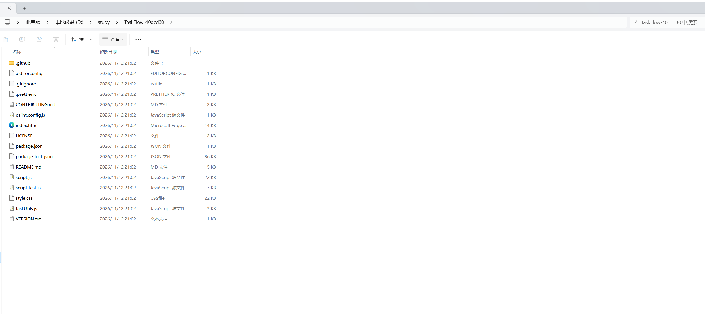
新手面对一堆文件，第一反应是看 README 的 "Getting started" 一节。TaskFlow 的 README 原文写的是：
Clone the repository and open `index.html` in any modern browser:
git clone https://github.com/SultanZhalifa/taskflow.git
cd taskflow
open index.html # macOS
start index.html # Windows
xdg-open index.html # Linux
意思很直白：在浏览器里直接打开 index.html。Windows 下 start index.html 的效果，和你在文件夹里双击 index.html 一模一样。
回顾各文件分工（第四章会细看）：真正参与运行的是 index.html（骨架）、style.css（外观）、script.js 和 taskUtils.js（逻辑）。

3.2 教学案例：当 README 和实际运行不一致#
这不是教程故意设计的陷阱——是这个开源项目里真实存在的矛盾。接下来每个环节都是工程现场的标准动作。
第 1 步：照说明做，观察异常#
按 README 的说法，双击 index.html。页面打开了：
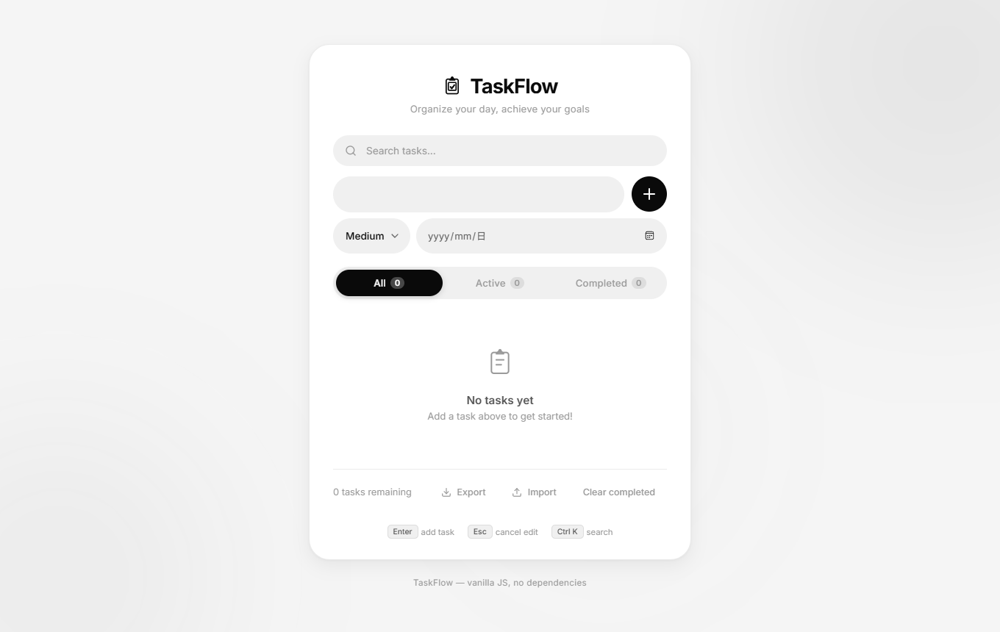
看起来好像正常？仔细看三处破绽：
- 输入框里的提示文字是空的（README 描述的功能之一本应让这里有变化）；
- 右下角赫然挂着 "Clear completed (1)" 按钮——什么任务都没有，哪来的已完成？
- 输入任务按回车，没有任何反应。
第 2 步：先提假设，不急着下结论#
现象是"页面能显示，但操作没反应"。可能的假设有几种：
- 假设 A：浏览器不行，换个浏览器试试？（先试 Edge 再试 Chrome——结果一样，排除）
- 假设 B：文件下载不完整？（对比文件大小、重新解压——排除）
- 假设 C：页面上有什么东西"该加载却没加载"？
第 3 步：向 AI 提问（带证据）#
这是第五章要系统练的技能，先实战一次。把现象 + 证据发给 AI：
我从 GitHub 下载了一个任务管理器项目，README 说
"open index.html in any modern browser"。
我在 Windows 上双击 index.html，页面能显示：
标题、输入框、按钮都在，但输入任务按回车没有任何反应，
输入框里的提示文字也是空的。
可能是什么原因？请给我排查方向。
AI（任何一个都行）大概率会提示：打开浏览器开发者工具看 Console 有没有报错。
第 4 步：用开发者工具拿到真凭实据#
按 F12 打开 DevTools，切到 Console（控制台），你会看到红色报错：
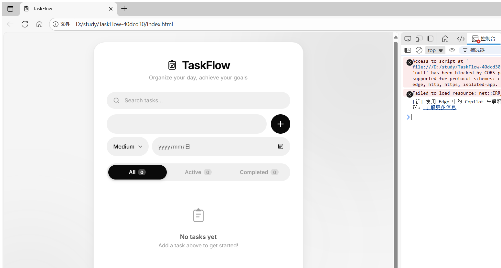
报错的关键句是：
Access to script at 'file:///D:/.../script.js' from origin 'null'
has been blocked by CORS policy
第 5 步：回源码找证据链#
报错说 script.js 被拦了。打开 index.html 拉到最后几行：
<script type="module" src="script.js"></script>
type="module" 表示这是 ES 模块化的脚本，script.js 还要再 import 另一个文件 taskUtils.js。浏览器的安全策略规定：模块文件必须通过 http:// 协议加载；用 file:// 双击打开时，浏览器的"来源（origin）"是 null，跨来源加载被一律拦截（CORS 策略）。
证据链闭合了：
README 说"直接打开" → 实际 HTML/CSS 加载了但 JS 模块被 CORS 拦截 → 页面"看似正常"但功能全灭。
结论：这个项目的 README 写法在带 type="module" 的代码面前不成立——这不是你操作错了，是 README 落后于代码。
彩蛋：README 的 "Potential improvements" 里还把 "Unit tests" 列为待改进项，可仓库里明明已经有 script.test.js。README 滞后于代码是开源项目的常态——README 是线索，不是圣旨。
第 6 步：采用最小解决方案#
问题定位："模块必须走 http://"。最小改动不是改代码（项目本身没问题），而是换一种打开方式：起一个本地服务器，让文件通过 http://localhost 访问。见 3.3。
第 7 步：验证#
服务器起来后再试：输入任务回车——任务出现了，右下角弹提示。同一个项目、没改一行代码，只是换了访问协议——这就是证据。
第 8 步：总结可迁移的方法（重点背）#
README 说 X → 照着做 → 结果不对 → 别急着重装/改代码
→ 先观察"哪里不对"（交互无响应？报错？空白？）
→ 提出假设 → 问 AI 要"排查方向"而不是"玄学方案"
→ 用开发者工具/源码拿证据 → 找最小解决路径 → 验证
判断"真跑起来"的标准：交互有预期反应 + Console 没有相关报错。两条都满足才算数——"看起来正常"不算证据（本例中 file:// 页面看起来就完全正常）。
这套流程以后遇到任何"README 和实际对不上"的项目都能用：文档过时、版本变更、平台差异、作者笔误，原因不同，查法相同。
3.3 正确姿势：起一个本地服务器#
办法有很多，本教程推荐 python -m http.server——Python 自带、不用装任何东西、一条命令搞定。
步骤：
-
打开项目文件夹（比如
D:\study\TaskFlow-40dcd30）； -
在资源管理器地址栏输入
cmd回车，直接在该目录打开命令行； -
输入命令（注意结尾的
--bind 127.0.0.1）：textpython -m http.server 8765 --bind 127.0.0.1 -
看到
Serving HTTP on 127.0.0.1 port 8765就说明服务器起来了，这个黑窗口不能关：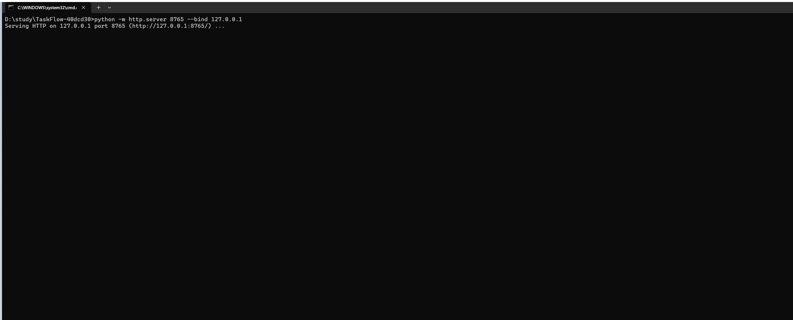
本地服务器终端 -
浏览器访问
http://127.0.0.1:8765/或http://localhost:8765/（localhost和127.0.0.1都指"本机"，8765 是端口号）。
为什么加 --bind 127.0.0.1？——这是一个安全细节，也是好习惯：
- 不加
--bind时，python -m http.server默认监听0.0.0.0，意思是"接受来自本机以及同一局域网内其他设备的访问"。宿舍、实验室网络里，别人理论上能访问你开的这个文件夹网页； - 加
--bind 127.0.0.1后，服务器只接受本机自己的连接——单人学习场景下这是正确的最小开放原则。
关于 Windows 防火墙弹窗：如果系统弹出"是否允许 Python 访问网络"，学习用途不需要点"允许"——--bind 127.0.0.1 只服务本机，不放行也不影响使用；误点了"允许"也不用慌，它只是把 Python 加进了放行列表，随时可以关闭服务器窗口并到"Windows 安全中心 → 防火墙"里改回来。原则：本地学习不要随手放行陌生程序联网——这条安全习惯比本项目本身重要。
备用方案 A：装了 Node.js 的话，在项目目录运行 npx http-server -p 8765 -a 127.0.0.1（-a 同样是指定只监听本机）。
备用方案 B：VS Code 装 "Live Server" 扩展后右键 index.html → "Open with Live Server"。本质相同：都是用 http:// 代替 file://。
3.4 跑起来什么样？逐项验证#
页面打开后，做一轮"验收"，确认真的跑起来了：
| 动作 | 预期结果 |
|---|---|
| 刚打开页面 | 空状态提示 "No tasks yet..."；输入框有打字机效果的提示语 |
| 输入"复习第三章"回车 | 任务出现在列表顶部 + 右下角 toast 提示 "Task added." |
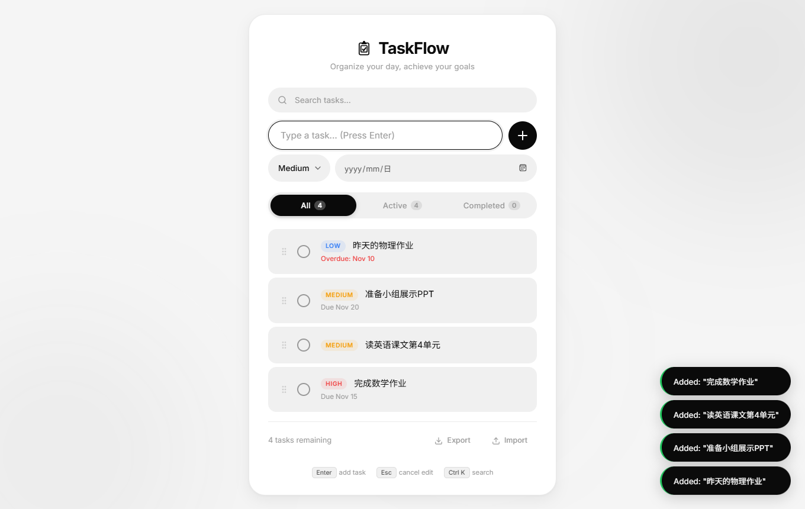 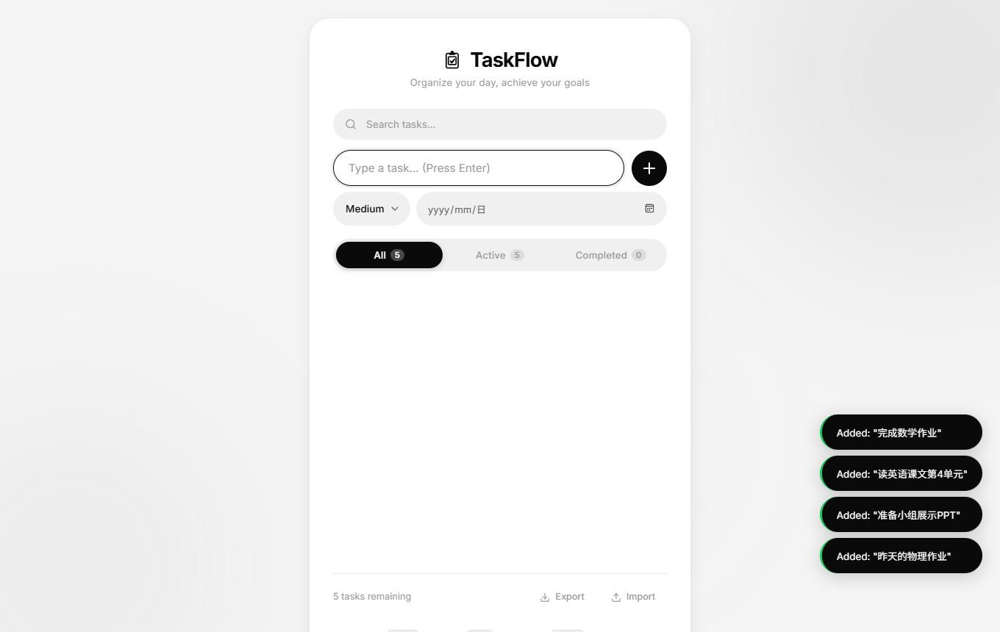
再试试这些交互，全部有反应才算通过：
-
点任务左边的圆圈 → 划线变灰，完成数 +1；
-
点 "Completed" 筛选 → 只剩已完成的：
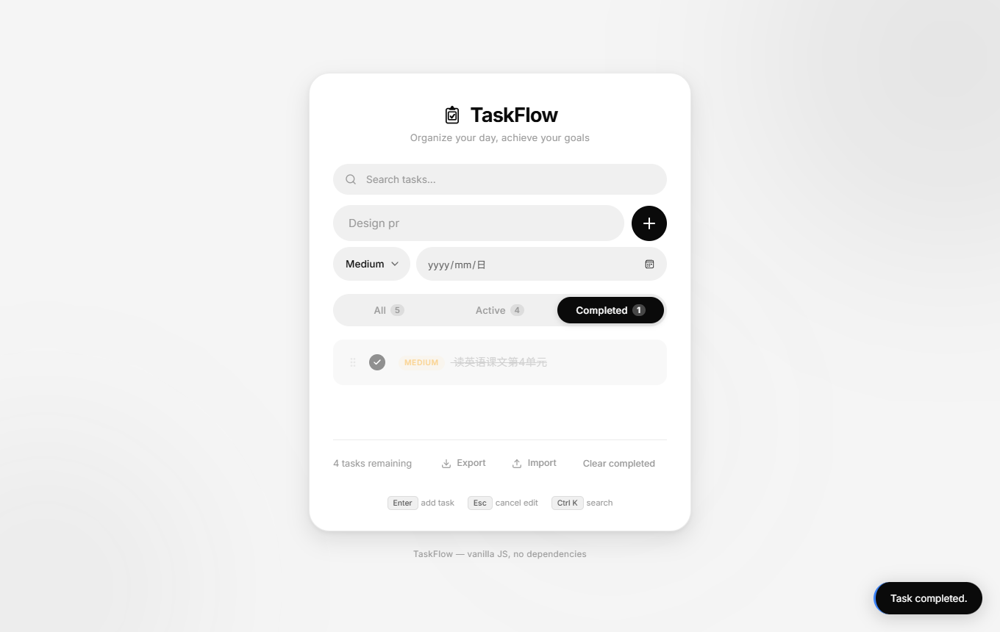
已完成筛选 -
顶部搜索框输入关键词 → 匹配文字高亮：
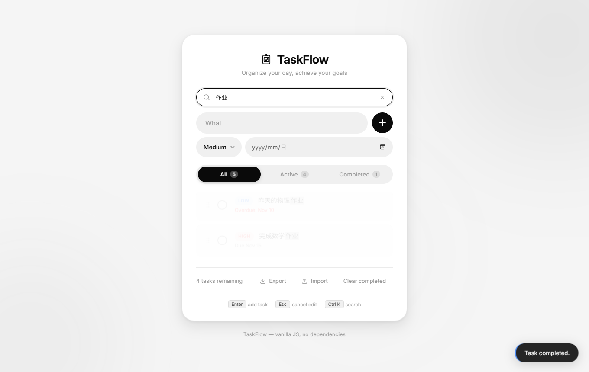
搜索高亮 -
双击任务文字 → 进入编辑模式：
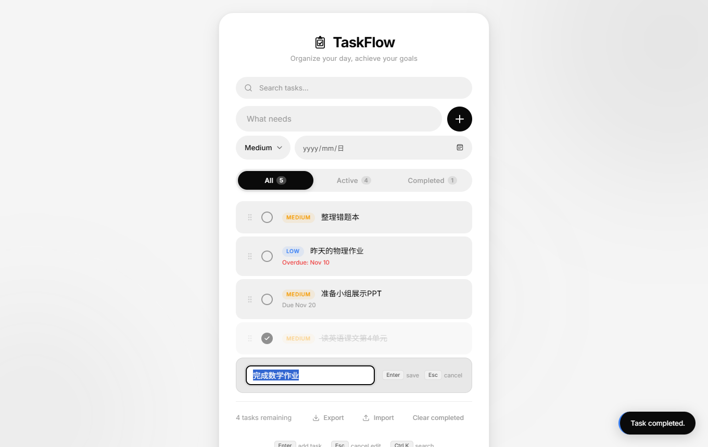
编辑模式 -
刷新页面（F5）→ 任务还在！ 数据存哪了？按 F12 → Console，输入：
jslocalStorage.taskflow_tasks能看到一个 JSON 字符串，里面就是你的任务数据：
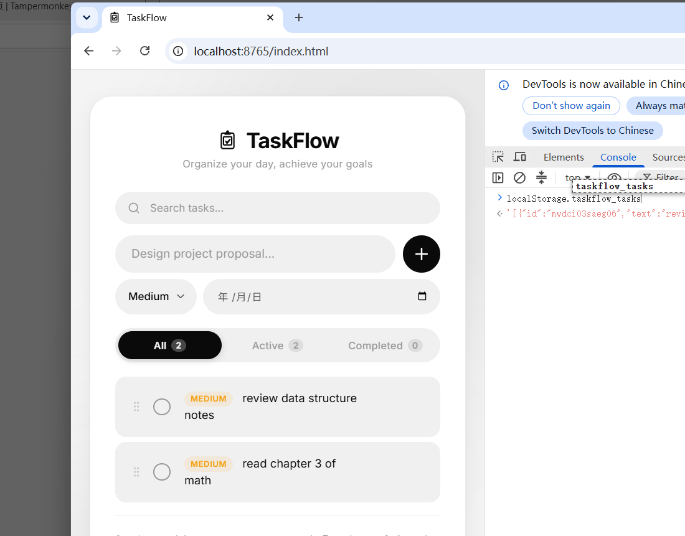
localStorage
localStorage 是浏览器内置的小型存储空间，每个网站单独一份，刷新、关浏览器都不丢（除非主动清缓存）。第四章会追到代码里看它怎么被读写。
3.5 用 VS Code 打开项目（推荐）#
写代码需要一个看得顺眼的编辑器，免费首选 VS Code（官网免费下载）。打开方式：File → Open Folder → 选项目文件夹。
第一次打开会弹 "Do you trust the authors of the files in this folder?"：
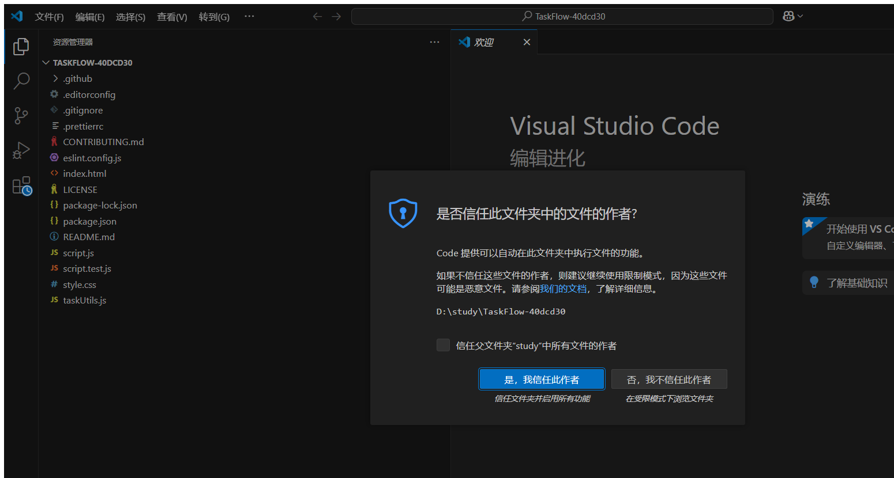
这是 VS Code 的安全机制——防止陌生文件夹里的脚本自动执行。确认是你自己下载的项目后点 "Yes, I trust the authors"（不点信任也能看代码，只是部分功能受限）。
信任后看到正常的文件树界面：
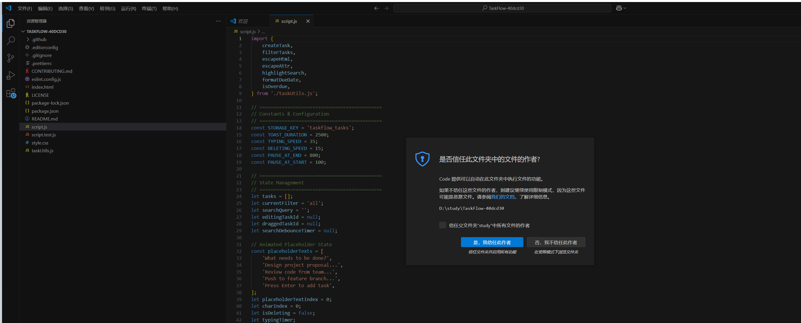
3.6 保存"基线状态"#
跑通之后，先别急着改。做两件事：
- 备份：把
TaskFlow-40dcd30整个文件夹复制一份放着（比如TaskFlow-原版备份）。改坏了随时能还原； - 记录基线行为：列个清单——添加/编辑/完成/删除任务、筛选、搜索、拖拽、刷新后数据还在。这是第七章"回归测试"的对照标准：改完代码后，这些老功能必须全部依然正常。
常见失败及处理#
| 现象 | 原因与处理 |
|---|---|
python 不是内部或外部命令 |
Python 没装或没加 PATH：重装并勾选 "Add Python to PATH"，或改用 npx http-server / Live Server |
| 访问 127.0.0.1 显示"无法连接" | 服务器窗口被关了 / 端口号记错了。确认黑窗口还在、端口一致 |
Address already in use |
端口被占用：换个端口如 python -m http.server 8888 --bind 127.0.0.1 |
| 页面空白 + Console 报 404 | 进错目录了：服务器要在含 index.html 的那层目录里启动 |
| 能打开但输入没反应 | 多半还是 file:// 双击打开的——检查地址栏必须以 http:// 开头（127.0.0.1 或 localhost） |
| 弹过防火墙提示 | 用 --bind 127.0.0.1 时不需要放行；不放行也能用 |
本章 AI 提问示例#
- 「README 让我
start index.html直接打开，但浏览器 Console 报错Access to script at 'file:///...' from origin 'null' has been blocked by CORS policy，script 标签是type="module"。请解释：为什么 README 的说法在这个项目里不成立？」 - 「
python -m http.server 8765 --bind 127.0.0.1这条命令每个部分什么意思？--bind 127.0.0.1和不加有什么区别？」 - 「我在 Windows 上启动了本地服务器，浏览器访问 127.0.0.1:8765 提示无法连接，命令行没有报错。帮我列排查顺序。」
- 能完整复述"README 不一致"排查流程的 8 步；
- 说出为什么
file://双击打不开本项目（哪几个因素叠加）； - 能不看教程启动本地服务器（含
--bind）并访问到页面； - 能区分"真跑起来"和"假跑起来"的两条判断标准；
- 知道
--bind 127.0.0.1的作用，以及为什么不随意放行防火墙； - 知道任务数据存在
localStorage的哪个 key 下； - 已做好原版备份。
- 关掉所有窗口，从零开始：开终端 → 启动服务器 → 浏览器访问 → 添加任务 → 刷新 → 任务还在 → DevTools Console 里找到它，全程不卡壳；
- 能向人解释：如果 README 让你直接双击打开，为什么对这个项目行不通。
上一章：第二章 ｜ 下一章：第四章：利用AI快速理解陌生项目